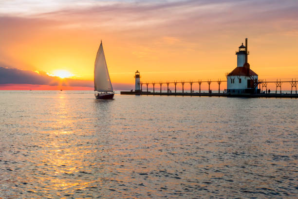
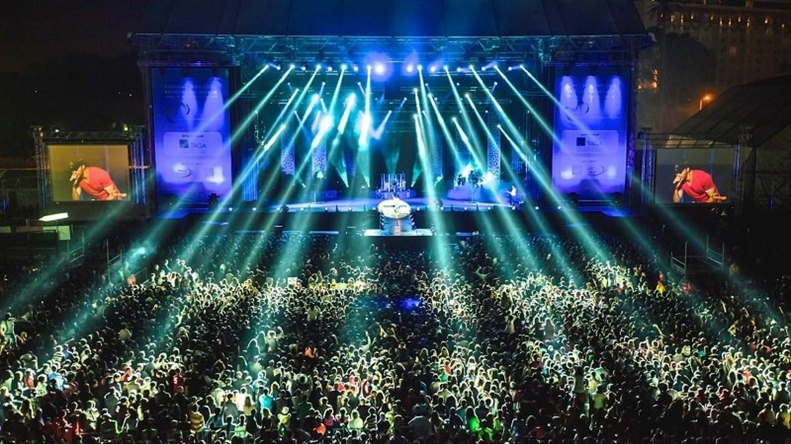

Lễ hội hoa Tulip tại Holland

Holland's Tulip Festival is a breathtaking celebration of flowers and culture every spring. The town becomes a colorful canvas, with vibrant tulips in full bloom, attracting thousands of visitors. Visitors can enjoy various cultural performances, art exhibitions, and local food vendors. It's a perfect blend of nature and culture.
Event Highlights:
- Over 5 million tulips in bloom
- Traditional Dutch dances and performances
- Delicious Dutch treats and food
Ngày hội Băng Tuyết tại Detroit

Detroit hosts a magical snow and ice festival every winter, transforming the city into a winter wonderland. The festival features incredible ice sculptures, ice skating, and snow-related activities. Visitors can enjoy the winter beauty while indulging in hot cocoa and local winter delicacies. It’s a family-friendly event that brings the community together.
Event Highlights:
- Giant ice sculptures displayed throughout the city
- Ice skating rink open to all ages
- Snowman-building contests and hot cocoa stations
Đua thuyền buồm trên hồ Michigan
The annual sailing races on Lake Michigan are thrilling to watch, with boats racing across the water. The event attracts professional sailors and enthusiasts from around the world. Spectators can watch the race from the shore or from boats. The competition is fierce, and the view of the shimmering lake with boats cutting through the water is unforgettable.
Event Highlights:
- Multiple categories of races for all skill levels
- Spectator boats and viewing points along the shore
- Live music and celebration after the race
Lễ hội âm nhạc mùa hè tại Traverse City
Traverse City’s Summer Music Festival is a celebration of live music set against the stunning backdrop of Michigan’s lakes. This festival features performances from international artists, local bands, and a variety of genres including jazz, pop, rock, and classical. Visitors can enjoy great food, art, and of course, incredible music.
Event Highlights:
- Outdoor concerts with breathtaking views
- Local food vendors offering regional dishes
- Workshops and art exhibitions during the event
Hội chợ nông sản tại Ann Arbor

Ann Arbor’s Farmers Market is an excellent way to experience Michigan’s agricultural products. Every year, farmers from around the state gather to sell their fresh produce, artisanal products, and handmade goods. It's a lively market where you can support local businesses and enjoy the freshest fruits and vegetables.
Event Highlights:
- Fresh, organic produce from local farmers
- Handmade goods and artisanal products
- Live music and cooking demonstrations